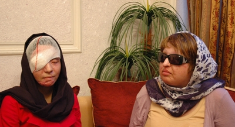

|
|
"چشم در برابر چشم "/دیدار فعالان حقوق زنان با آمنه بهرامی
جمعه23 اردیبهشت 1390
کانون زنان ایرانی/فریده غائب:"چشم در برابر چشم " آمنه بهرامی دختری که شش سال پیش توسط خواستگارش در حمله ی اسید پاشی چشم هایش را از دست داد این را می گوید و همچنان در اجرای حکم قصاص علیه مجید اصرار دارد و می گوید از من انتظار رضایت نداشته باشید.
در آستانه اجرای حکم قصاص اسید پاشی آمنه، روی چشم های مجید، تعدادی از فعالان حقوق زنان و اعضای حامیان کمپین کمک یه معصومه عطایی به همراه معصومه از قربانیان اسیدپاشی، دیروز پنج شنبه به دیدار آمنه بهرامی رفتند.
آمنه بهرامی 32 ساله که شش سال پیش توسط خواستگارش مجید با اسید مورد حمله قرار گرفت و دو چشم خود را از دست داد؛ بعد از شش سال توانست حکم نهایی قصاص را از دادگاه بگیرد و قرار است صبح روز شنبه حکم قصاص اجرا شود.
عصر دیروز معصومه عطایی 28 ساله نیز که خود یکی از قربانیان خشونت اسیدی است به دیدار آمنه رفت و ابراز همدلی کرد.

معصومه می گوید که قصد ندارد آمنه را از تصمیمی که برای قصاص گرفته منصرف کند چرا که او را درک می کند که زندگی اش از بین رفته است. اما معصومه در ادامه می گوید:" هرگز اما خودم حاضر نیستم عمل قصاص را انجام دهم و دست به چنین خشونتی بزنم."
معصومه بارها این جمله را به آمنه می گوید .انگار می خواهد غیر مستقیم او را ترغیب به گذشت کند.
و به قانونی اشاره می کند که مجازات را برعهده قربانی می گذارد و خود شانه خالی می کند .
آمنه با وجود شنیدن همه اظهار نظرها و مخالفت هایی که با بازتولید خشونت ،همچنان بر موضع انجام قصاص تاکید دارد و می گوید:" من به عنوان اولین زنی هستم که توانسته ام حکم برابر چشم در مقابل چشم را بگیرم و شما انتظار دارید که بعد از شش سال دوندگی در دادگاهها از این رای بگذرم؟ "
آمنه مدام در حرف هایش گلایه می کرد از اینکه کسی به کمکش نیامده است :" اوایل اتفاقی که برایم افتاد برخی از فعالان زنان و حقوق بشر کمک کردند اما این کمک ها پله ای برای پیشرفت خودشان بود."
آمنه با احساس دلخوری و بدبینی نسبت به موضوع حقوق بشر تاکید می کند که در زمانه ای که کسی به فکرش نبوده چگونه می تواند رضایت بدهد؟
جلد اول کتاب خاطرات آمنه در آلمان به زبان آلمانی به نام "چشم دربرابر چشم" منتشر شده است و آمنه می گوید:" می خواهم با انجام بقیه عمل های زیبایی و پوست ، عکسی از خودم در انتهای جلد دوم کتاب منتشر کنم به عنوان زنی که با توانمندی های خود توانسته به این نقطه برسد."